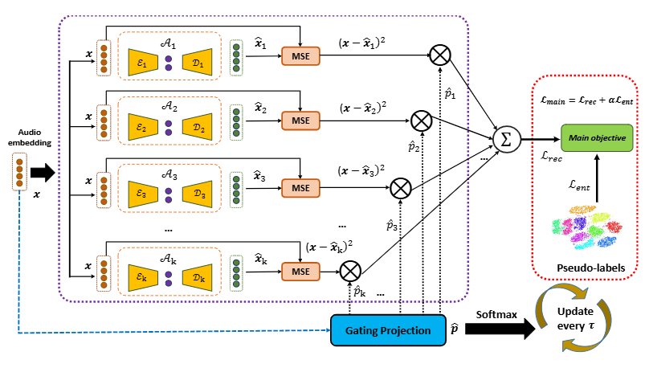

SoICT'24
Towards Unsupervised Speaker Diarization System for Multilingual Telephone Calls Using Pre-trained Whisper Model and Mixture of Sparse Autoencoders
Phat Lam*, Lam Pham, Truong Nguyen, Dat Ngo, Thinh Pham, Tin Nguyen, Loi Khanh Nguyen, Alexander Schindler
An unsupervised multilingual speaker diarization system using Whisper-based speaker embeddings and a mixture of sparse autoencoders for clustering without large-scale annotated data.